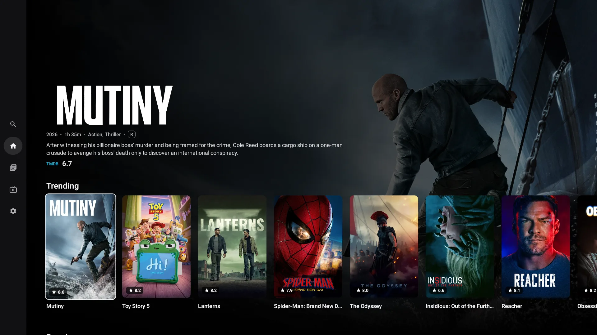
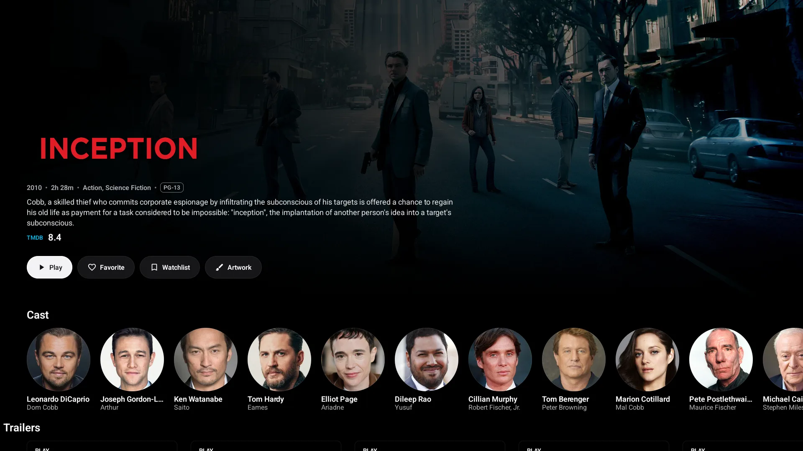

01
A home that feels alive
Artwork-led branches, useful metadata, continue watching, next up, and optional trailer previews make discovery feel immediate.

Cedar for Android TV
A focused, beautiful television experience that brings movies, series, live TV, and the services you already use together on the biggest screen in your home.
Made for Android TV · Google TV · Fire TV

Purpose-built for remotes
Rich, artwork-first details
Movies, series & live TV
Signed direct updates
The Cedar experience
Cedar gives every title room to breathe. Artwork, context, cast, episodes, sources, and playback controls are composed for a television—not stretched up from a phone.

01 / Details
Clear artwork, localized imagery, ratings, cast, seasons, episodes, and source selection—without sacrificing the backdrop that makes television feel cinematic.
Built for the living room
01
Artwork-led branches, useful metadata, continue watching, next up, and optional trailer previews make discovery feel immediate.
02
System-language audio, subtitles off by default, skip markers, scrubbing thumbnails, and TV-friendly controls stay out of the way until you need them.
03
Playlist order, XMLTV programme data, a focused grid guide, and an in-guide preview player keep channels fast to browse.
04
Optional Trakt and Simkl connections help keep watch progress and history with you, while Cedar profile tools make moving to a new television easier.
Available now
Download the current signed APK and install it on a compatible Android TV, Google TV, or Fire TV device.
Cedar is independently distributed. Android may ask you to allow installation from your browser or file manager. Updates are signed and verified before Cedar opens the system installer.